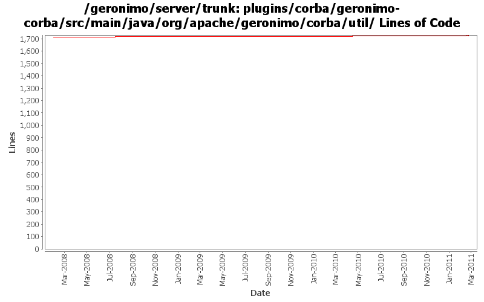

[root]/plugins/corba/geronimo-corba/src/main/java/org/apache/geronimo/corba/util

| Author | Changes | Lines of Code | Lines per Change |
|---|---|---|---|
| Totals | 18 (100.0%) | 56 (100.0%) | 3.1 |
| rickmcguire | 1 (5.6%) | 23 (41.1%) | 23.0 |
| djencks | 2 (11.1%) | 15 (26.8%) | 7.5 |
| xiaming | 2 (11.1%) | 10 (17.9%) | 5.0 |
| dblevins | 1 (5.6%) | 5 (8.9%) | 5.0 |
| jdillon | 9 (50.0%) | 3 (5.4%) | 0.3 |
| kevan | 2 (11.1%) | 0 (0.0%) | 0.0 |
| genspring | 1 (5.6%) | 0 (0.0%) | 0.0 |
GERONIMO-5815 still change to use yoko 1.2 snapshot, but add a fix to endorsed package so that UtilLoader in yoko-rmi-spec could be resolved by yoko-rmi-impl bundle
5 lines of code changed in 1 file:
Revert "GERONIMO-5815 upgrade yoko from 1.1 to 1.2-SNAPSHOT and fix a classloading issue in UtilDelegateImpl.java"
This reverts commit 43a241b8d37dd28df797c10a7843e47ea649afb9.
0 lines of code changed in 1 file:
GERONIMO-5815 upgrade yoko from 1.1 to 1.2-SNAPSHOT and fix a classloading issue in UtilDelegateImpl.java
5 lines of code changed in 1 file:
Updates corresponding to OPENEJB-1354: Internal CoreDeploymentInfo class renamed to BeanContext
5 lines of code changed in 1 file:
GERONIMO-5092 corba plugins start, handle delegate gets into jndi, doesn't seem to break ejbs
13 lines of code changed in 1 file:
GERONIMO-5092 fix split packages, update things a bit for osgi
2 lines of code changed in 1 file:
Fix for TCK regressions
23 lines of code changed in 1 file:
(GERONIMO-3985) Use SLF4J as the primary logging facade for Geronimo
3 lines of code changed in 9 files:
GERONIMO-1761 move geronimo-util to geronimo-crypto. Still pending mv of one test directory that svn wouldn't let me move
0 lines of code changed in 2 files: